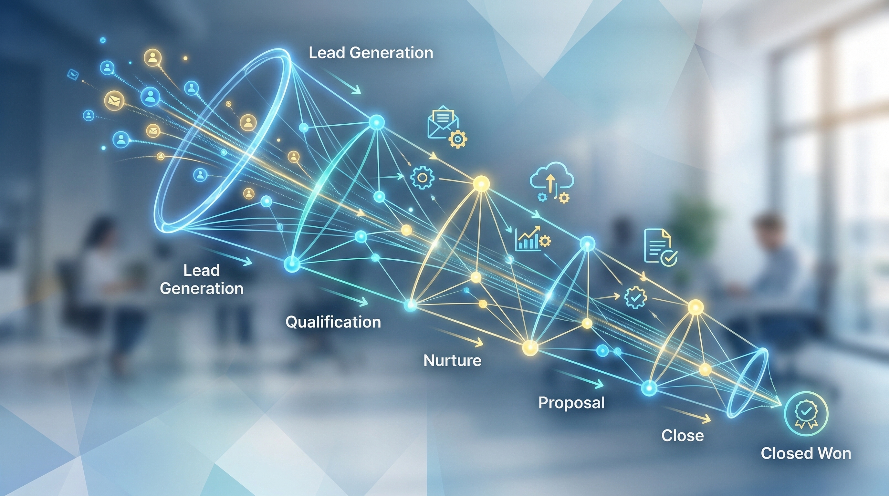

Key Takeaway: Automated sales pipeline management isn't about replacing human judgment — it's about making sure your best prospects never fall into the silence where deals go to die.
Here's a scenario most small business owners know intimately: you had a great call with a prospect last month. They seemed genuinely interested. You sent a proposal. They said they'd get back to you. And then... nothing. You meant to follow up, but a client emergency pulled you away. Then a week passed. Then two. Now following up feels awkward, and you've quietly written the deal off.
That prospect didn't choose a competitor. They didn't decide your price was too high. They just got busy — and you weren't there when the timing became right. This is not a sales problem. It's a systems problem. And automated sales pipeline management is the solution.
Where Deals Go to Die
The uncomfortable truth about most small business sales processes is that they're not processes at all. They're a collection of individual habits — some consistent, most not — that produce unpredictable results depending on how much bandwidth the owner has on any given day.
Research from the Sales Management Association found that companies with defined, automated sales processes achieve 18% more revenue growth than those operating reactively. That 18% isn't coming from better pitching or smarter targeting. It's coming from not losing deals that were already interested.
The three places where deals leak in unautomated pipelines:
- Post-first-contact silence — Prospects who didn't reply to the first email and were never followed up with
- Post-proposal stalls — Proposals sent, acknowledged with "we'll think about it," then never revisited
- Closed-lost that wasn't — Leads marked lost due to inactivity when they were simply in a longer buying cycle
Every small business has all three. Automated pipeline management plugs all three — simultaneously.
What Automated Sales Pipeline Management Actually Is
Automated sales pipeline management is a system that tracks every prospect's position in your sales process and triggers the right action — an email, a task, a call reminder — at the right time, without you having to remember to do it.
It's not about removing humans from sales. It's about removing the reliance on human memory for low-level tasks. You still make the strategic decisions — which prospects to prioritise, how to handle objections, when to close. The automation handles the mechanical work: the fifth follow-up email, the two-week check-in, the "circling back" message to a prospect who went quiet.
In a properly configured automated pipeline, every prospect has a defined next action scheduled. Nothing sits in a "to-do someday" state. The pipeline always knows what happens next — and it executes that automatically.
The 7 Stages of an Automated Pipeline
Every business has slightly different stages, but the underlying structure of an effective automated SMB sales pipeline looks like this:
| Stage | Definition | Automation Trigger |
|---|---|---|
| 1. Prospect | New lead identified or imported | Enrich + qualify → assign ICP score |
| 2. Qualified | Meets ICP criteria (size, budget, role) | Trigger first-touch email sequence |
| 3. Contacted | First outreach sent | Schedule Day-3 follow-up automatically |
| 4. Engaged | Reply, open, or link click detected | Alert owner + escalate to personalised outreach |
| 5. Proposal | Offer or proposal sent | Schedule proposal follow-up sequence (Day 2, 5, 10) |
| 6. Negotiation | Active back-and-forth on terms | Human-in-the-loop; automation paused |
| 7. Closed | Won or Lost decision made | Won: onboarding sequence. Lost: 90-day re-engage |
Notice that automation runs at every stage — including Closed-Lost. A prospect who wasn't ready today may be ready in 90 days. Most businesses never find out, because they stopped reaching out. An automated pipeline doesn't stop.
Automation Triggers That Work
The quality of your pipeline automation is determined by the quality of your triggers — the conditions that tell the system what to do next. Here are the triggers that consistently produce results for small business pipelines:
Time-based triggers are the foundation. If no reply in 3 days → send follow-up. If no reply in 7 days → send value email. If no reply in 14 days → send "last check-in" message. These run automatically and cover the majority of pipeline management without any manual intervention.
Behaviour-based triggers are more powerful. If a prospect opens your email → flag as warm, increase follow-up priority. If they click a link to your pricing page → alert you immediately, this is a high-intent signal. If they forward your email to a colleague → mark as Very Hot, trigger concierge-level outreach.
Stage-change triggers fire when a prospect moves forward (or stalls). If 30 days pass with no stage movement → flag as stalled, trigger re-engagement. If they move from Contacted to Engaged → pause the generic sequence, enable personalised outreach mode.
The combination of these three trigger types creates a pipeline that's genuinely intelligent — not just a drip sequence, but a responsive system that mirrors how a great sales rep would actually manage their pipeline.
Follow-Up Sequences That Actually Convert
The single most important component of your automated pipeline is the follow-up sequence. This is where most small businesses either get it right or lose the deal forever.
Here's a proven 5-email sequence for small business B2B outreach:
Email 1 (Day 0) — The Hook. One specific pain point. One clear value proposition. One ask: a 15-minute call. Keep it under 100 words. No attachments.
Email 2 (Day 3) — The Value Proof. Share a result. A case study number. A before/after. Something that shows, not just tells, what you deliver. Ask the same question from email 1, but softer: "Still interested in a quick call to see if this fits?"
Email 3 (Day 7) — The Shift. Change the frame. Instead of pitching your solution, describe the problem in detail. Make them feel it. End with: "If this resonates, I'd love to show you how we solve it."
Email 4 (Day 14) — The Social Proof. A client name (with permission), a specific outcome, a quote if you have one. People buy when they see others like them have already bought and won. This email handles the silent objection: "Will this actually work for me?"
Email 5 (Day 21) — The Breakup. Be direct. "I've reached out a few times without hearing back — I'll assume the timing isn't right. If anything changes, my calendar is always open." This email, counterintuitively, often gets the highest reply rate of the sequence. It creates urgency without being aggressive.
After the 5-email sequence, move the prospect to a low-frequency nurture sequence — one email per month — that delivers value without asking for anything. These nurture touches keep you visible during longer buying cycles and ensure that when they're finally ready, you're the first name they think of.
The 5 Metrics That Tell You If It's Working
An automated pipeline without measurement is just an expensive guess. Track these five metrics to know whether your automation is actually working:
- Pipeline velocity — Average number of days from Prospect to Closed. Declining velocity = automation working. Rising velocity = something is stalling deals; investigate the stage where time is accumulating.
- Stage conversion rate — What % of leads move from each stage to the next? If Contacted → Engaged conversion is below 5%, your first-touch email needs rewriting. If Proposal → Closed is below 30%, your proposal itself needs work.
- Follow-up completion rate — Are all scheduled follow-ups actually firing? A rate below 100% means your automation has gaps. Every missed follow-up is a potential lost deal.
- Re-engagement rate — Of Closed-Lost prospects re-entered into your 90-day re-engage sequence, what % eventually move back into active pipeline? Healthy businesses see 5–15% re-engagement from lost prospects within 6 months.
- Pipeline coverage ratio — Total pipeline value divided by revenue target. Ideally 3–4x. If you need $100K in new revenue, you should have $300–400K of realistic pipeline. Too low = prospecting problem. Too high with low close rate = qualification problem.
The AI Advantage: From Automation to Autonomous
Traditional pipeline automation is rules-based: if X happens, do Y. It's powerful, but it's still limited by the rules you've set in advance. AI-powered pipeline management goes further — it learns, adapts, and proactively surfaces insights you didn't know to look for.
An AI-driven sales pipeline agent can:
- Analyse which subject lines get the highest open rates for your specific audience and automatically optimise future emails
- Identify patterns in which prospect types convert fastest and reprioritise your pipeline accordingly
- Draft personalised follow-up emails that reference the prospect's specific company, industry, or recent news — at scale
- Flag stalled deals proactively before they become dead deals, and suggest the right intervention
- Run competitor research on top prospects and surface talking points for your calls
- Update pipeline stage automatically based on email replies — no manual CRM entry required
For a small business owner wearing multiple hats, this is transformative. Your AI agent manages the pipeline end-to-end while you focus on the conversations and decisions that actually require you. The pipeline is always updated. Follow-ups always fire. No deal slips through because you were busy.
AgentGrow's AI CBO agent includes full autonomous pipeline management — from initial prospect research through qualification, outreach, multi-touch follow-up sequences, and deal tracking — all running 24/7 without a sales hire.
Getting Started Without Overwhelm
The biggest mistake small business owners make with pipeline automation is trying to build the perfect system on day one. They spend three weeks configuring a CRM and never actually use it. Here's a simpler approach:
Week 1: Define your stages. Write down the 5–7 steps a prospect goes through from "I've never heard of you" to "signed contract." That's your pipeline. Nothing more complex than that.
Week 2: Write your follow-up sequence. Draft the 5 emails above. They don't need to be perfect. They need to exist. You can refine them with data once they're running.
Week 3: Choose your tool. For most small businesses, a simple CRM with built-in email automation (or an AI agent that manages all of this for you) is the right starting point. Complexity comes later, after you've learned what's working.
Week 4: Import your pipeline. Add every prospect you're currently tracking — even the ones you'd mentally written off — into your new system. Assign each one a stage and let the automation take over.
Within 30 days, you'll have data. You'll see which stage is leaking the most deals. You'll see which email gets the best replies. You'll see which prospect types convert fastest. And you'll have a pipeline that runs whether you're in meetings, on holiday, or sleeping.
That's the promise of automated sales pipeline management for small business: not a sales team in a box, but a system that ensures your best prospect never falls into silence again.
Ready to Automate Your Sales Pipeline?
AgentGrow's AI CBO runs your full pipeline — prospecting, outreach, follow-up sequences, and deal tracking — 24/7, without a sales hire.
Start Your Free 7-Day TrialNo credit card required · Starter plan included
Frequently Asked Questions
What is automated sales pipeline management for small business?
Automated sales pipeline management uses software and AI to track, follow up, and move prospects through your sales stages without manual effort. Instead of relying on memory or spreadsheets, automation triggers emails, reminders, and tasks at the right moment — ensuring no deal slips through the cracks.
How does sales pipeline automation help small businesses close more deals?
Pipeline automation ensures every prospect receives consistent follow-up at the right intervals, regardless of how busy you are. Research shows 80% of B2B sales require 5+ follow-ups, yet 92% of salespeople give up before that point. Automation bridges this gap by running sequences on autopilot — so you close deals that would otherwise be lost to silence.
What are the stages of an automated sales pipeline?
A typical automated sales pipeline includes: Prospect (new lead added), Qualified (ICP-fit confirmed), Contacted (first outreach sent), Engaged (reply or open detected), Proposal (offer presented), Negotiation (active discussion), and Closed-Won or Closed-Lost. Automation moves leads through stages and triggers the right actions at each one.
Do small businesses need a CRM for sales pipeline automation?
A CRM is the backbone of sales pipeline automation — it's where you track lead status, store interaction history, and trigger automated sequences. For small businesses, lightweight CRMs with built-in automation (or AI agents that manage a CRM on your behalf) provide the same capability as enterprise tools at a fraction of the cost.
How much does sales pipeline automation cost for a small business?
DIY stacks of CRM + email automation can run $50–300/month, but require significant setup and management time. AI-powered autonomous agents like AgentGrow bundle pipeline management, outreach, follow-up, and content into a single platform starting at $499/month — replacing the cost of a fractional sales rep or marketing hire.